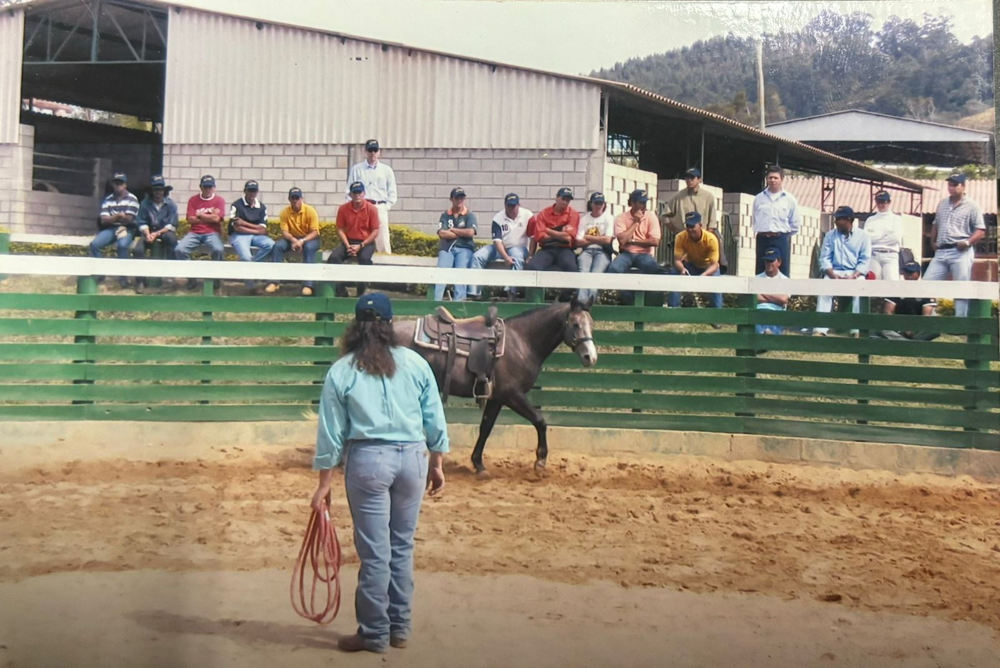
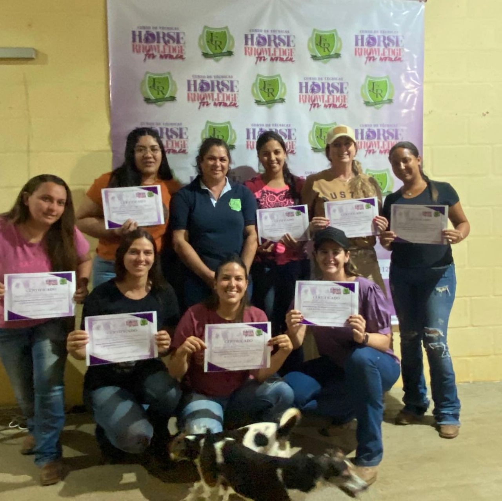
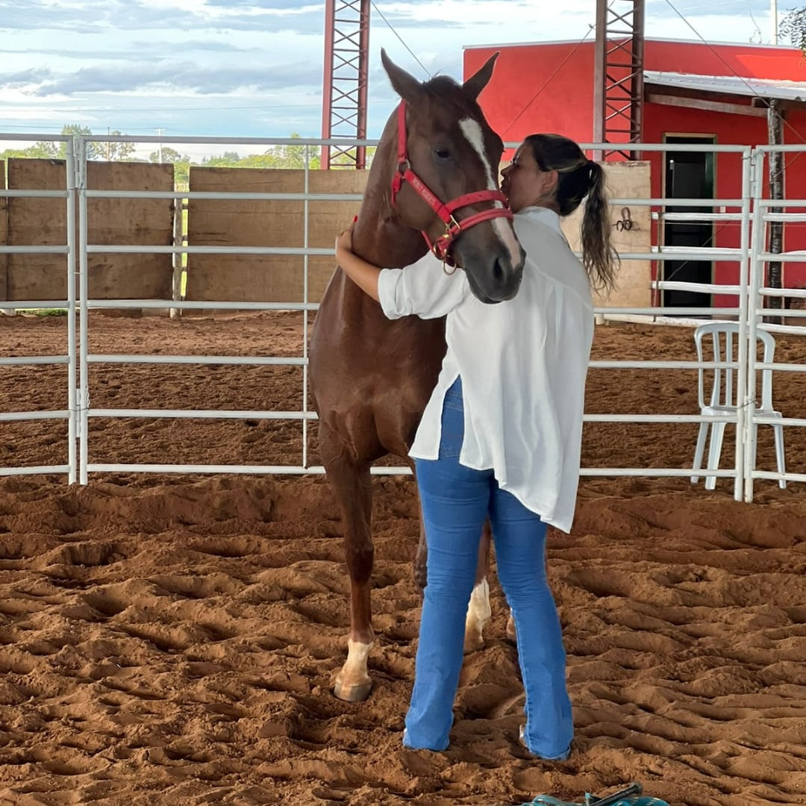
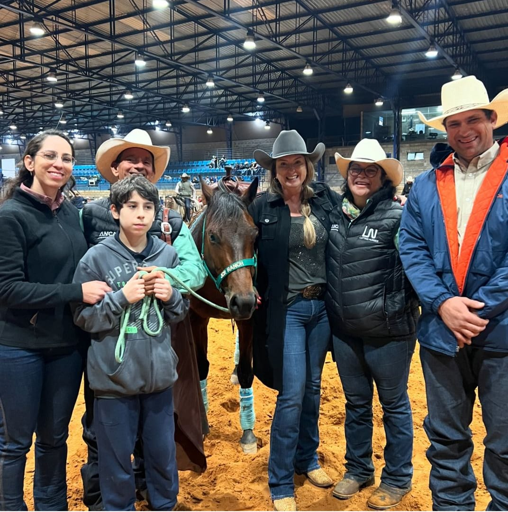

Jacira Rodrigues com uma experiência de mais de 30 anos de trabalho com cavalos, com muito estudo e conhecimento na área da doma racional, ministrei vários cursos na área de doma por alguns anos e a base da doma me deu várias outras experiências a serem exploradas.
E tudo começou no dia 17 e 18 de dezembro de 2022, depois de alguns anos sem ministrar cursos, estava retornando com curso para mulheres com o título HORSE KNOWLEDGE FOR WOMEN - CONHECIMENTO DE CAVALO PARA MULHERES. Houve todo preparo e expectativa para esse curso, layout pronto e uma ideia na cabeça de como os cavalos auxiliam e ajudam na evolução do homem . O que parecia uma ideia pessoal mas funcional para mim, pois eu vivi todo esse processo e queria trabalhar e aplicar em outras pessoas e sentir qual seria o resultado de algo vivenciado por mim, eu queria que as pessoas experimentassem. Então aconteceu, foram oito participantes dentro do redondel com o cavalo que espelhava aquele momento, os sentimentos, os medos, a insegurança, e mostrava sobre a personalidade de cada um de forma tão sutil que cada um entendia o que estava acontecendo, e os pontos que precisavam a ser trabalhados, sem a utilização verbal somente com a comunicação corporal e foi surpreendente o resultado, muito além da expectativa para mim e todos presente, FOI INCRIVELMENTE surpreendente.
A partir desse dia eu entendi que eu poderia criar uma metodologia na qual os tópicos que utilizei no âmbito do meu conhecimento adquirido são: CONEXÃO, SENTIR, AUTOCONHECIMENTO, EQUILÍBRIO, CONFIANÇA, LIDERANÇA, ATITUDE, PROATIVIDADE, SENSIBILIDADE, RELAÇÃO INTERPESSOAL, LIBERDADE, AUTOESTIMA E CONTROLE DA ANSIEDADE.
Eu sabia que para isso precisaria de uma equipe, e foram selecionados aqueles que eu acreditava que junto a mim daria vida a essa metodologia. O nome, a logo, os detalhes foram estudados e escolhidos minuciosamente por todos. E assim nasceu a NEXUS que vem do latim e significa CONEXÃO. A conexão consigo mesmo e com o que está a sua volta através desses seres incríveis que são os cavalos.
